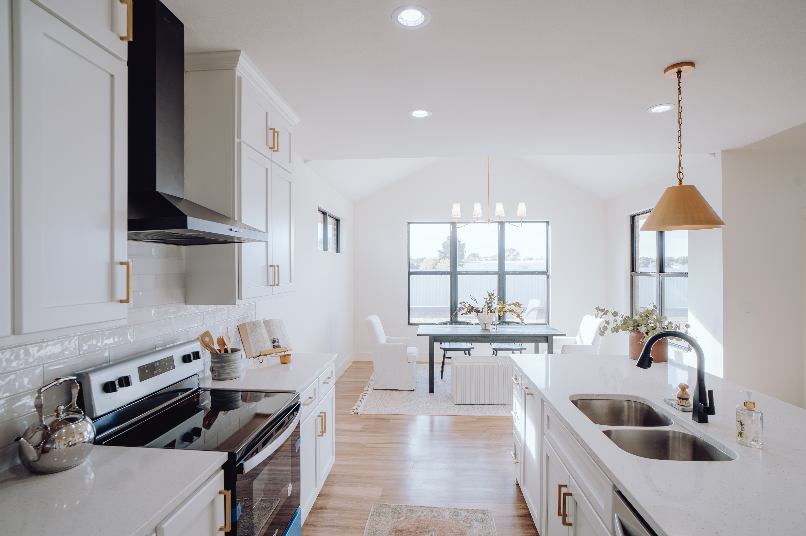
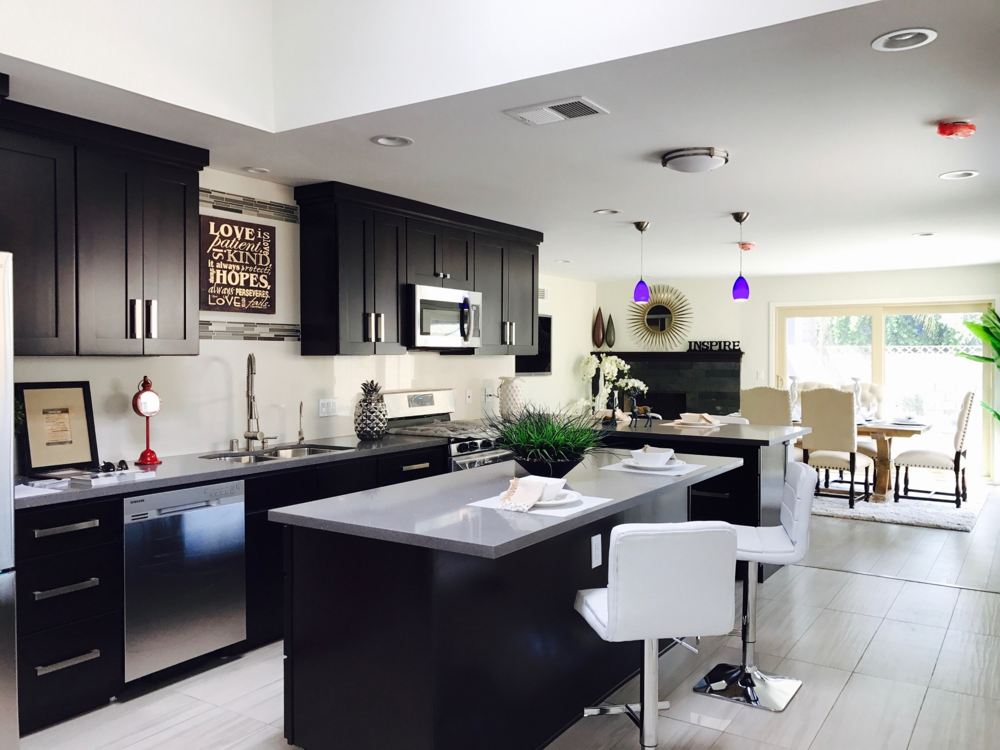
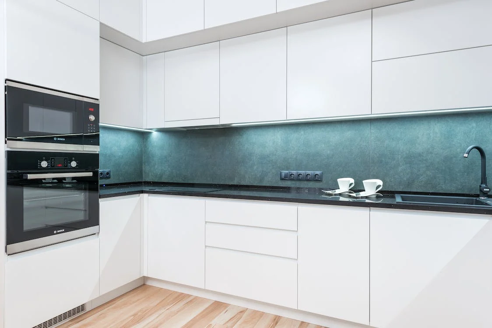

Kitchen Interiors

Modern Modular Parallel Kitchen Design With Tectona And Acacia Cabinets
Layout: Parallel kitchen
Style: Modern
Colour:
Base and loft unit : Tectona,
Wall unit : Acacia.
Shutter finish:
Base and loft unit : Laminate in suede finish,
Wall unit: Laminate in suede finish
Countertop Material: Marble
Storage Features:
Spacious cabinet with shutter and drawer storage,
Loft cabinets for additional storage,
Plate racks above sink for easy drying and storage.
Special Features:
Profile lighting under the wall cabinets to light the countertop.
White dado tile for low maintenance and premium look.
False ceiling with recessed and profile lighting.
Ideal for: Small- Medium families
Size: 13x9 feet

Contemporary Grey L Shaped Kitchen Design With Cabinet Lights
Layout: L shape kitchen
Style: Contemporary
Colour:
Base unit: Gothic Grey,
Wall unit: Gothic Grey.
Shutter finish:
Base unit: Laminate in suede finish,
Wall unit: Laminate in suede finish.
Countertop Material: Marble
Storage Features:
Spacious cabinets with drawer storage, glass shutter wall units and tall units for good visibility
Special Features:
Profile lighting under the wall cabinets to light up the countertop. The cabinets are also lined with lights on the inside to highlight the crockery etc.,
Marble dado tiles for high durability.
Ideal for: Large families
Size: 16x15 feet

Contemporary Modular Island Kitchen Design With Grey Cabinets
Layout: Island kitchen
Style: Contemporary
Colour:
Base unit: Gothic Grey,
Wall unit: Gothic Grey.
Shutter finish:
Base unit: Laminate in suede finish,
Wall unit: Laminate in suede finish.
Countertop Material: Marble
Storage Features:
Spacious cabinets with drawer storage, open and closed storage,
Tall units for appliances and other storage purposes.
Special Features:
Black and white patterned flooring to blend with the cabinet colour and style,
Island kitchen that includes hob, oven and doubles up as breakfast counter.
Ideal for: Large families
Size: 21x18 feet

Contemporary Caruba Green And Inverno Beige Modular Island Kitchen Design With Damask Wallpaper
Layout: Island kitchen
Style: Contemporary
Colour:
Base unit : Inverno,
Wall and tall unit : Caruba,
Island unit : Ostrica.
Shutter finish:
Base unit : Laminate in matte finish,
Wall unit and tall unit : Laminate in matte finish,
Island unit : Lamiante in matte finish.
Countertop Material: Marble
Storage Features:
Spacious cabinet with shutter and drawer storage,
Tall units for ample storage.
Special Features:
Profile lighting under wall cabinets to highlight the countertop,
Island unit with ample space for dining,
The fluted glass shutters look elegant,
Patterned dado tile complement the overall aesthetic,
The beige and white damask wallpaper adds an elegant touch to the kitchen.
Ideal for: Medium - Large families
Size: 16x11 feet

Contemporary Modular Open Kitchen Design In Frosty White With Frosted Shutters
Layout: Open Kitchen Design
Style: Contemporary
Colour:
Base unit: Frosty White,
Wall unit: Frosty White.
Shutter finish:
Base unit: Laminate in high-gloss finish,
Wall unit: Laminate in high-gloss finish.
Countertop Material: Marble
Storage Features: Drawer, countertop and cabinet storage
Frosted glass shutters give the kitchen a regal aesthetic
Size: 14x13 feet